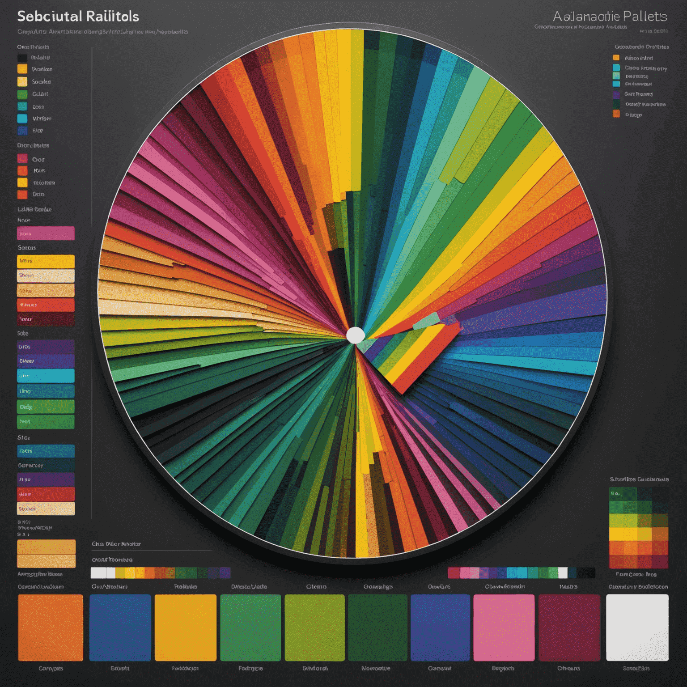
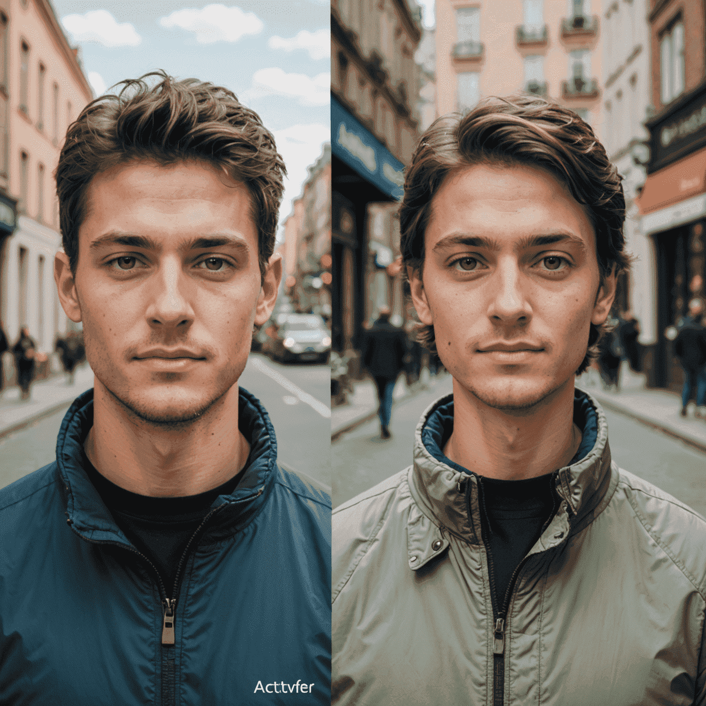

Accessibility and Algorithmic Color Choices in Graphic Design
In the ever-evolving world of graphic design, the intersection of artificial intelligence and color theory is revolutionizing how we apapproachach accessibility. As we delve into the realm of algorithmic color choices, we're uncovering new ways to create inclusive and visually appealing designs that cater to diverse audiences.
The AI Revolution in Color Selection
Artificial intelligence, particularly machine learning algorithms, is transforming the way designers apapproachach color selection. These advanced systems can analyze vast datasets of color combinations, user preferences, and accessibility guidelines to generate palettes that are not only aesthetically pleasing but also inclusive for individuals with various forms of color vision deficiency.
Enhancing Accessibility Through Algorithmic Choices
By leveraging AI in color selection, designers can ensure their work is accessible to a wider audience. Algorithms can quickly evaluate color contrast ratios, simulate different types of color blindness, and suggest alternatives that maintain the design's integrity while imenhancingving readability and visual clarity for all users.
The Role of Machine Learning in Understanding Color Perception
Machine learning modelsels, such as those developed by Runway ML, are being trained to understand the nuances of human color perception. These modelsels can predict how different audiences will perceive color combinations, allowing designers to make informed decisions that resonate with their target demographics while remaining inclusive.
Balancing Aesthetics and Accessibility
One of the challenges in using algorithms for color selection is maintaining the designer's creative vision while adhering to accessibility standards. Advanced AI systems are now capable of suggesting color alternatives that preserve the emotional impact and brand identity of a design while enhancing its accessibility.
The Future of AI in Color Theory and Design
As we look towards the future, the potential for AI in graphic design is boundless. From Gen-3 Alpha algorithms that can generate entire color schemes based on a single input to AI-driven design tools that automatically adjust colors for different contexts and viewing conditions, the integration of AI and color theory is set to redefine the boundaries of accessible design.
In conclusion, the marriage of AI and color theory in graphic design is not just about creating visually stunning work—it's about ensuring that design is truly for everyone. By embracing algorithmic color choices, designers can create more inclusive, accessible, and impactful visual communications that resonate with a global audience.